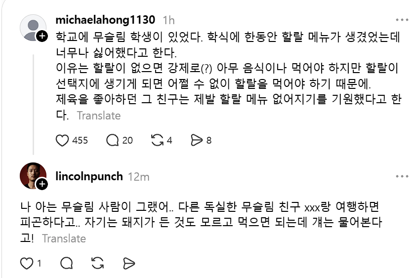
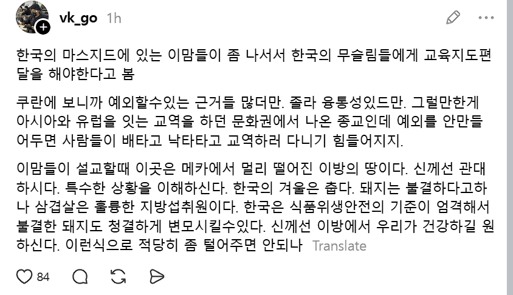
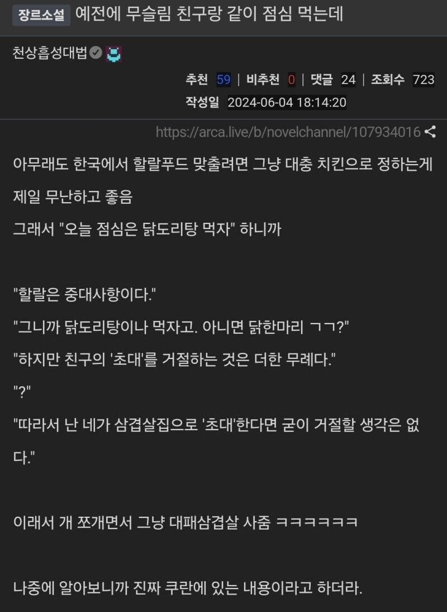

해결책을 제시하는 스레드 유저

나름 유명한 그 짤

생각이 짧고, 유연성이 부족하고 편협한 애들이 극단적인 원리주의자가 되기는 함...

해결책을 제시하는 스레드 유저

나름 유명한 그 짤

생각이 짧고, 유연성이 부족하고 편협한 애들이 극단적인 원리주의자가 되기는 함...
저것보니 할랄푸드 요구자들은 극단주의자로 변질될 가능성이 높아보이네
기독교에서 구약 율법에서 금지한걸 아직까지 못먹게 하는 집단이나 유대교에서 코셔 따지는 집단이 어떤 상태인지 생각하면 비슷할 듯
안식일에 전기 스위치를 끄지 못해서 사람 불러다가 불끄는 애들이 유대인들이긴 하지...
ㄴㄴ 이미 요구하는 거 자체가 극단주의자임 본문에 나온 것처럼 멀쩡한 사람들은
어쩔 수 없다 하고 먹거든
저것도 좀 애매하긴 하더라
술도 마시고 세속적으로 잘 노는데
할랄 도축 안 한 고기는 피비린내 때문에 가까이만 가도 구역질 난단 놈 있었고
그 시벌놈은 아시안마켓에서 할랄 햄 사다 일부러 구워줘도 안처먹긴 했지만
비늘 없는 해산물은 먹으면 안된다더니
잘 모르고 주문한 푸팟퐁커리 씁.. 게는 생선 아님 하고 먹던 놈도 있었고 (입에 안맞는다고 다시는 안먹긴 했음)
우리 고기 구워먹는 회식자리 껴서 옆에서 된찌에 밥말아 먹던 놈 있었고
실제로 구할 수 없으면 그냥 먹어라 안먹어서 몸이 상하는게 더 큰 죄다라고 한다던데 ㅋㅋㅋㅋ
요즘 무슬임은 패션무슬림들 투성이라 걍 없으면 빼앵 거림
ㄹㅇ... 다들 유도리있는데 소수가 지랄함
하필 극단주의자 대표가 사우디고, 사우디가 미국의 비호를 받고있어서...
비건도 일반 비건은 "음, 신선한 채소, 나물 넘 좋아~" 하는데 소수비건이 고기 먹지말라고 막....
문제는 그 소수를 구별할 방법이 없다는거임
탈레반은 위장취업하고 테러모의도 하는데 얘가 온건주의인지 아닌지 비신자 입장에선 방법이 없음
이슬람 극단주의의 확률이 높아진다
종교가 본인의 모든 주관을 휘두르게 하면 극단주의로 가는거
내가 종교를 자유자재로 휘둘러야지 ㅋㅋㅋ
다 재밌게 행복하게 살자고 종교믿고 일하고 그러는거 아녀?
모르고 먹기 초대받으면 군말없이 먹기 먹을거 없으면 먹기
유도리 챙겨줄거 다 챙겨주고 권장사항으로만 냄겨둔걸
극단주의자들은 무조건 할랄로 처먹기 이지랄하는거니까
되려 할랄을 강하게 요구하는 새끼들만 골라서 추방하면 되네
그새낀 언제든지 극단적인 테러도 감행할 종자니까
위대하신 알라와 그의 선지자 무하마드는 그렇게 속좁으신분이 아니며 우리의 행복을 우선으로 하시는 분이나 그냥 쳐먹어라
독자 "너무 불쾌했습니다. 공개적으로 사과하세요"
이말년 "죄송합니다. 따로 기도로 사과해서 당사자와 잘 해결했습니다."
"한국같은 먼 곳에서라면 알라께서도 삼겹살에 소주 정도는 용서하신다"
원래 책을 한 권 읽은 새끼가 가장 무서운 법이거덩...종교도 그 교리를 계속 읽고 공부하고 탐구해야지 아는건데 점마들이 뭘 알것냐
한국 들어온 무슬림도 층위가 다양해서...
요새 개드립에서 말 많은 경북대 모스크 쪽은 내가 겪어보기로는 많이 배우고 개방적인 사람이 많았거든.
20~30대 석박사니까.. 근데 그 가족은 또 다를 수 있지. 가족은 딱히 고학력자 아닌 경우도 많았으니
그래도 이 사람들하고 어디 지방 공장이나 농촌에서 일하는 사람들하고는 또 생각하는 게 꽤 다를겨
모든 종교가 다 그렇지 뭐... 천주교,불교라고 병신 없고 개독교라고 정상인 없을까... 다만 무슬림은 높은 확률로 개병신이니까 좀 그렇긴하지..
할랄도 지랄이다
국가적 재난 상황에도 구호품이 할랄인지 아닌지 따지는 애들임
여호와증인같은놈들
초대는못참지
나도 일본유학때 주위에 한놈 있었는데
맥포크버거 존나쳐먹고
“난 영어가 짧아서 포크가 뭔지 몰랐다” 이러면서 넘어가고
돈코츠라멘 존나쳐먹으면서
“내가 신세지는 국가의 음식문화를 존중해아한다” 이러면서 존나쳐먹음
라마단기간도 그냥 술쳐마시고
“내일부터 하되 하루 더 연장하면 된다” 이지랄 ㅋㅋㅋ
친구의 초대를 거절하는 것은 '무례'다, 이런 것만 제대로 새기고 살아도 훨씬 더 나을텐데
무슬림도 사람이네 ㅋㅋ